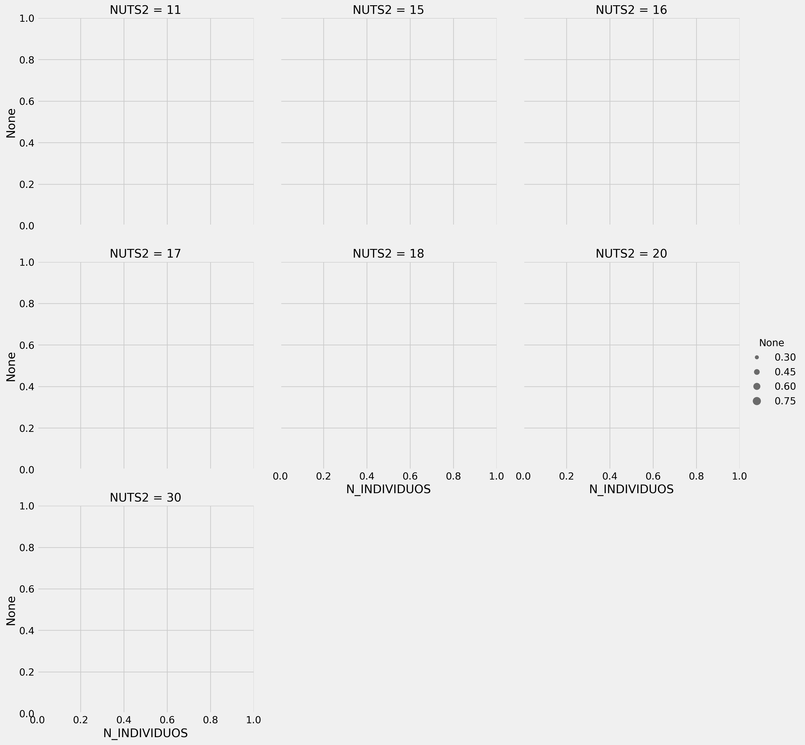
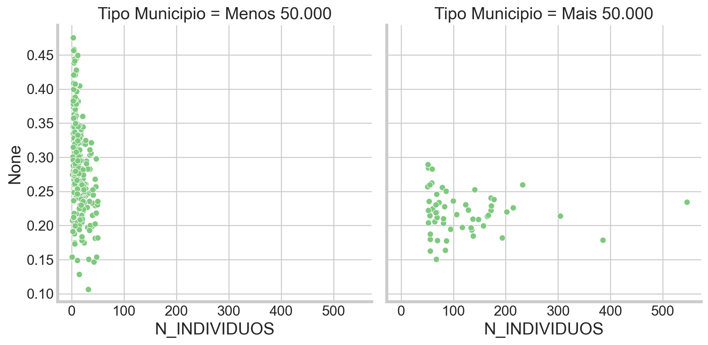
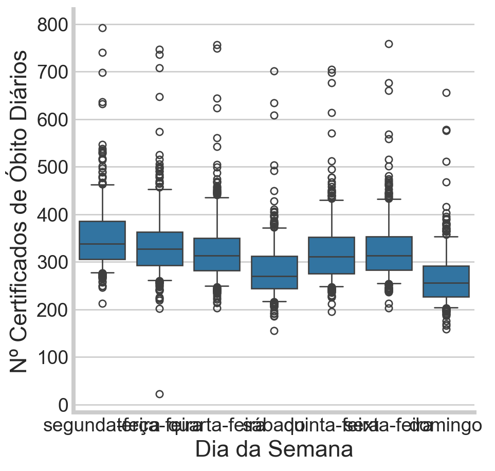
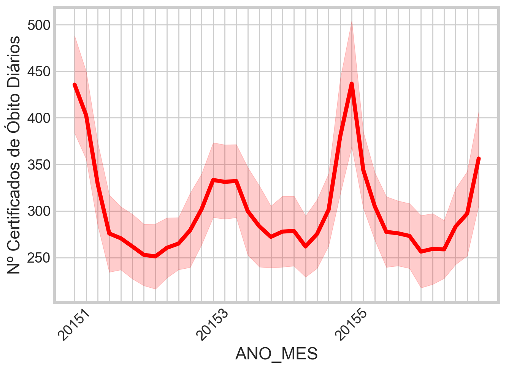
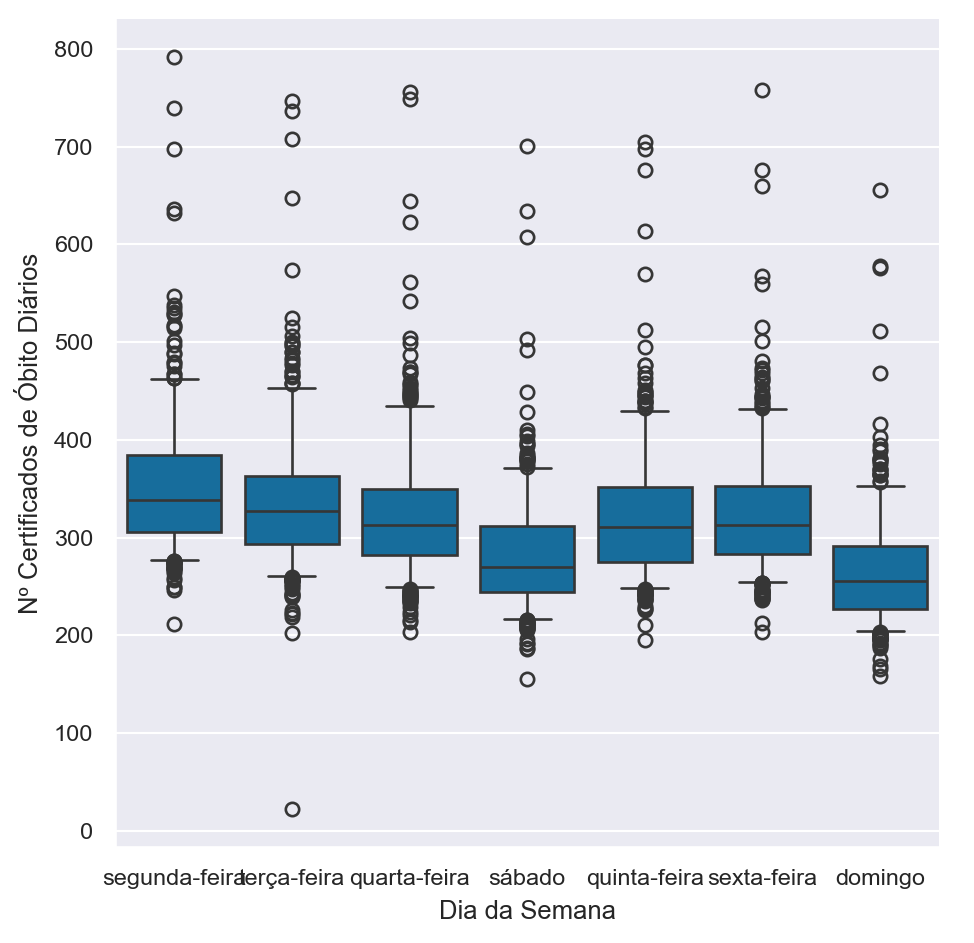
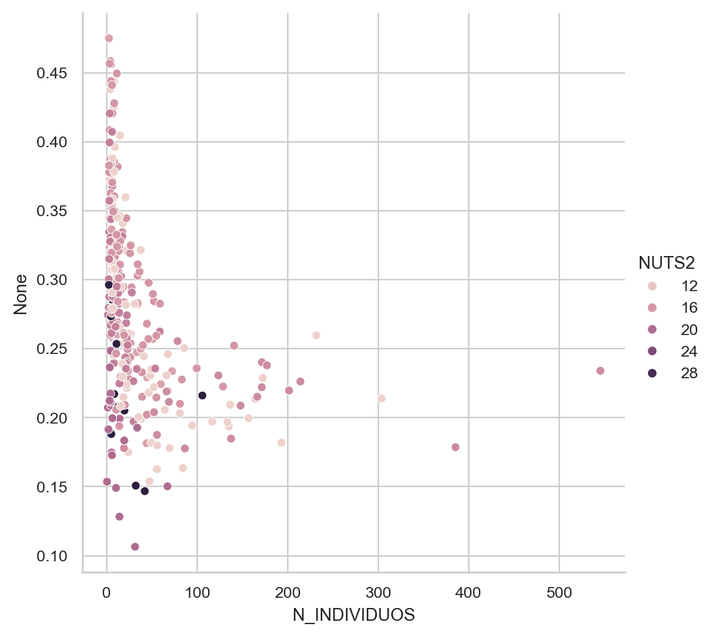
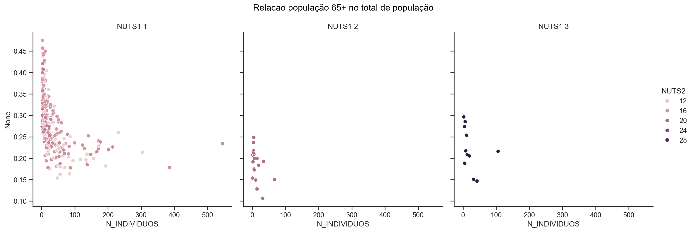
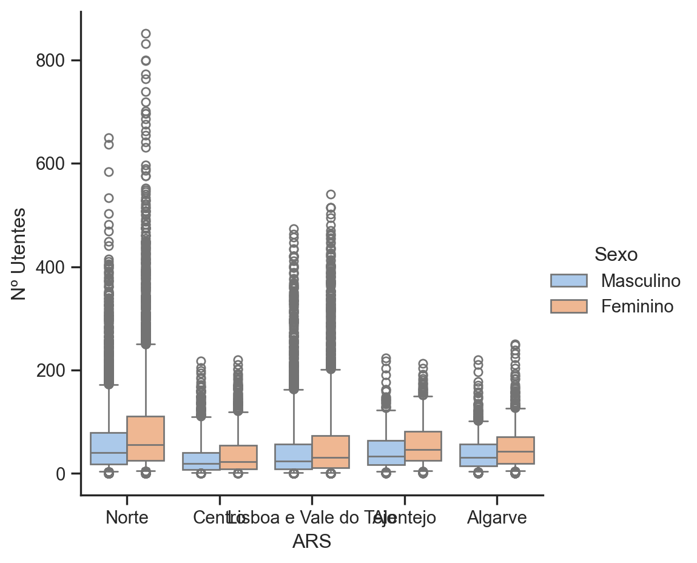
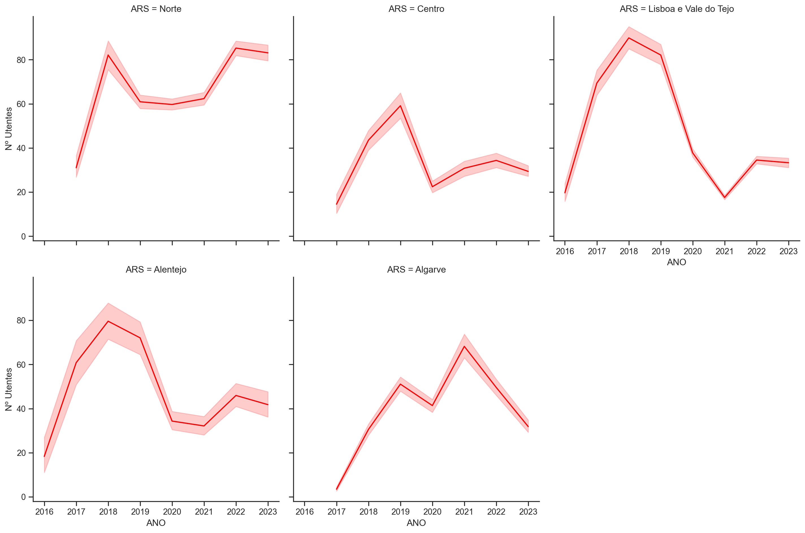

Utilização de jupyter notebooks para documentação de scripts e visualização de resultados.
Introdução ao Pyplot do packageMatplotlib.
3.1 Jupyter e Markdown
Um JUPYTER Notebook é composto de uma combinação de células de código e documentação.
Abrir através do prompt: Anaconda prompt -> jupyter notebook
Ficheiros do tipo .ipynb
Shortcuts
The Zen of Python, by Tim Peters
import this
The Zen of Python, by Tim Peters
Beautiful is better than ugly.
Explicit is better than implicit.
Simple is better than complex.
Complex is better than complicated.
Flat is better than nested.
Sparse is better than dense.
Readability counts.
Special cases aren't special enough to break the rules.
Although practicality beats purity.
Errors should never pass silently.
Unless explicitly silenced.
In the face of ambiguity, refuse the temptation to guess.
There should be one-- and preferably only one --obvious way to do it.
Although that way may not be obvious at first unless you're Dutch.
Now is better than never.
Although never is often better than *right* now.
If the implementation is hard to explain, it's a bad idea.
If the implementation is easy to explain, it may be a good idea.
Namespaces are one honking great idea -- let's do more of those!
3.1.1 Data Exploration and Visualization (Basics)
3.1.1.1 Importar Dados Externos para Pandas Dataframe
# Obter dados a partir do Link Direto ao dados# Importar Bibliotecas# No ambiente formação devem-se utilizar os ficheiros locais (poderá dar erro "http error 404")import pandas as pdimport requests # Link direto para ficheiro CSV: Despesa com Medicamentos nos Hospitais do SNSficheiro =r'https://dados.gov.pt/pt/datasets/r/8803343f-6e1b-47de-87ac-26432adb45f0'# Importar num Pandas Dataframedf = pd.read_csv(ficheiro, sep=';')# Informação# print(df.head(5))# print(df.info())# print(df.describe())
# Import Packages openxyl para poder trabalhar com XLSXimport pandas as pdimport openpyxlimport numpy as np# Link Direto para ficheiro XLSXficheiro =r'https://dados.gov.pt/s/resources/classificacao-etaria-de-teatro/20240331-230417/classificacaoetariateatro.xlsx'# Importar num DataFrame# Argumentos uteis: skiprows=[0,1], usecols='A', nrows=2, header=None, sheet_name='Sheet1'# Mostrar primeiras 3 linhas e ultimas 3 linhas (head e tail em conjunto)# Utilizar iloc e numpy# print (df.iloc[np.r_[0:3, -3:0]]) # head e tail# print(df.info())# print(df.describe())
3.1.1.2 Importar tabela da BD
# Obter Password e Utilizador para Ligacao SQLfrom getpass import getpass # para ler a password sem a mostrarmy_user ='"BRUNO.LIMA"[BDIFRM]'my_password ='*******'
# Ler Dados da BD# criar conexãoimport cx_Oracle import pandas as pdhost ='c21oradev01.int.ine.pt'port ='1521'service ='FORMACAO'dsn_tns = cx_Oracle.makedsn(host, port, service_name=service) # Criar a conexão com todos os elementos,# incluingo user e passwordconn = cx_Oracle.connect(user=my_user, password=my_password, dsn=dsn_tns) # Cursor:# Criar o cursor na conexão conn que criámos antesc = conn.cursor()
Ler Diferentes Views para Pandas DF
# Dados por Municipio:# SQL Stringmy_sql ="""select *from V_BGRI2021_DTMN_PT """# Executar o cursor c com a string como parâmetroc.execute(my_sql)# Ober Nomes Colunas: (c.description devolva listagem dos atributos, nome atributo é 1º elemento - x[0])# No Modulo Intermédio devem discutir mais este tipo de metodo para criar Listagemnames = [x[0] for x in c.description]#print(names)# Input tabela dentro DataFrame, atribuir nomes colunasdf_mn_c2021 = pd.DataFrame(c.fetchall(), columns = names)# Dados por NUTS3:# SQL Stringmy_sql ="""select *from V_BGRI2021_N3_PT """# Executar o cursor c com a string como parâmetroc.execute(my_sql)# Criar Nomes colunasnames = [ x[0] for x in c.description]df_n3_c2021 = pd.DataFrame(c.fetchall(), columns = names)
ler a partir de .xlsx
# Solução de recurso caso existem problemas da BD import pandas as pddf_n3_c2021 = pd.read_excel(r'data\N3_C2021.xlsx')df_mn_c2021 = pd.read_excel(r'data\DTMN_C2021.xlsx')# Mostrar informação inicial:# print(df_n3_c2021.head(5))# print(df_mn_c2021.head(5))
# Criar DF a partir de Ficheiros EXCEL# "C:\Users\bart.schoen\OneDrive - ineportugal\Documents\2024_FormacaoPython\Dados\DTMN_C2021.xlsx"# "C:\Users\bart.schoen\OneDrive - ineportugal\Documents\2024_FormacaoPython\Dados\N3_C2021.xlsx"# Import Packages openxyl para poder trabalhar com XLSXimport pandas as pdimport numpy as np# Link Direto para ficheiro XLSXficheiro_dtmn =r'data\DTMN_C2021.xlsx'ficheiro_n3 =r'data\N3_C2021.xlsx'# Importar num DataFramedf_n3_c2021 = pd.read_excel(ficheiro_n3)ficheiro_dtmn = pd.read_excel(ficheiro_dtmn) # Argumentos uteis: skiprows=[0,1], usecols='A', nrows=2, header=None# Mostrar primeiras 3 linhas e ultimas 3 linhas (head e tail em conjunto)# Utilizar iloc e numpy# print(df_n3_c2021.head(5))# print(df_mn_c2021.head(5))# print(df_mn_c2021.info())
3.1.1.3 importar dados da DGS
Importar DGS (Certificados de Obitos por Dia)
# Ver referencia: https://dados.gov.pt/pt/datasets/registos-de-certificados-de-obito/# Atributos: Ano, Mês, Dia do Mês, Dia da Semana, Nº Certificados de Óbito Diáriosimport pandas as pd# Link DGS (Certificados de Obitos por Dia) ficheiro =r'http://dados.gov.pt/pt/datasets/r/dde8a843-d6a8-4a3f-82ff-b0e9c6743a3a'# Ler ficheiro do computador:#ficheiro = r'data\evolucao-diaria-de-certificados-de-obito.csv'# Importar em DataFramedf_obitos = pd.read_csv(ficheiro, sep=';')# Mostrar informação df# print(df_obitos.head(5))# print(df_obitos.info())# print(df_obitos.describe())
3.2 Gráficos em MATPLOTLIB e SEABORN
obter dados
# Solução de recurso caso existem problemas da BD import pandas as pddf_n3_c2021 = pd.read_excel(r'data\N3_C2021.xlsx')df_mn_c2021 = pd.read_excel(r'data\DTMN_C2021.xlsx')# Mostrar informação inicial:# print(df_n3_c2021.head(5))# print(df_mn_c2021.head(5))
# Criar DF a partir de Ficheiros EXCEL# "C:\Users\bart.schoen\OneDrive - ineportugal\Documents\2024_FormacaoPython\Dados\DTMN_C2021.xlsx"# "C:\Users\bart.schoen\OneDrive - ineportugal\Documents\2024_FormacaoPython\Dados\N3_C2021.xlsx"# Import Packages openxyl para poder trabalhar com XLSXimport pandas as pdimport numpy as np# Link Direto para ficheiro XLSXficheiro_dtmn =r'data\DTMN_C2021.xlsx'ficheiro_n3 =r'data\N3_C2021.xlsx'# Importar num DataFramedf_n3_c2021 = pd.read_excel(ficheiro_n3)ficheiro_dtmn = pd.read_excel(ficheiro_dtmn) # Argumentos uteis: skiprows=[0,1], usecols='A', nrows=2, header=None# Mostrar primeiras 3 linhas e ultimas 3 linhas (head e tail em conjunto)# Utilizar iloc e numpy# print(df_n3_c2021.head(5))# print(df_mn_c2021.head(5))# print(df_mn_c2021.info())
# Importar DGS (Certificados de Obitos por Dia)# Ver referencia: https://dados.gov.pt/pt/datasets/registos-de-certificados-de-obito/# Atributos: Ano, Mês, Dia do Mês, Dia da Semana, Nº Certificados de Óbito Diáriosimport pandas as pd# Link DGS (Certificados de Obitos por Dia) #ficheiro = r'http://dados.gov.pt/pt/datasets/r/dde8a843-d6a8-4a3f-82ff-b0e9c6743a3a'# Ler ficheiro do computador:ficheiro =r'data\evolucao-diaria-de-certificados-de-obito.csv'# Importar em DataFramedf_obitos = pd.read_csv(ficheiro, sep=';')# Mostrar informação df# print(df_obitos.head(5))# print(df_obitos.info())# print(df_obitos.describe())
3.2.1 Gráfico de Dispersão (Scatterplot) em MATPLOTLIB
# Importar pyplot do matplotlib from matplotlib import pyplot as plt
# Scatterplot que conssiste de 2 plots# 1º plot: Mostrar nº de indivíduos no áxis X, Y áxis: nº de indivíduos com idade superior a 65 # 2º plot: Mostrar nº de indivíduos no áxis X, Y áxis: nº de indivíduos com idade inferior a 14 # Marker: circle ('o'), point ('.'), diamond('d'), or square ('s')# s - tamamnho# label - rótulo a colocar# alpha - transparência# Plot 1plt.scatter(df_mn_c2021.N_INDIVIDUOS, df_mn_c2021.N_INDIVIDUOS_65_OU_MAIS, color ='Red', marker='.', s=12, label ='65 ou mais', alpha =0.5)# Plot 2plt.scatter(df_mn_c2021.N_INDIVIDUOS, df_mn_c2021.N_INDIVIDUOS_0_14, color ='Green', marker='s', s=12, label ='15 ou menos', alpha =0.5) # Definir Labels x e y áxisplt.xlabel('Nº Individuos')plt.ylabel('Nº Individuos por grupo')# Adicionar GRIDplt.grid(True)# Definir Títuloplt.title('Relação Individuos por grupo idade ao total \n por municipio',size=12,fontweight="bold")# Mostrar Legendaplt.legend()plt.show()
3.2.2 Gráfico Relação Grupos Etários com Tamanho Municipio (valores relativos)
# É possivel dividir as variáveis!# Permita tirar conclusões dos dadosplt.scatter(df_mn_c2021.N_INDIVIDUOS/1000, df_mn_c2021.N_INDIVIDUOS_65_OU_MAIS/df_mn_c2021.N_INDIVIDUOS, color ='Red', s=12, marker='.', label ='65 ou mais', alpha =0.5)# 2º plot com plt.scatter(df_mn_c2021.N_INDIVIDUOS/1000, df_mn_c2021.N_INDIVIDUOS_0_14/df_mn_c2021.N_INDIVIDUOS, color ='Green', s=12, marker='s', label ='15 ou menos', alpha =0.5) # #'''# Labels x e y áxisplt.xlabel('Nº Individuos (por 1000)')plt.ylabel('Rácio nº Individuos')# Adicionar GRIDplt.grid(True)plt.title('Relação Individuos por grupo idade ao total \n por municipio',size=12,fontweight="bold")# Mostrar Legendaplt.legend()plt.style.use('fivethirtyeight')#plt.titleplt.show()
Criar a mesma Figura utilizando os objectos fig e ax
# Import matplotlibfrom matplotlib import pyplot as pltfig,ax = plt.subplots()# Scatterplot que conssite de 2 plots# 1º plot: Mostrar nº de indivíduos no áxis X, Y áxis: nº de indivíduos com idade superior a 65 # 2º plot: Mostrar nº de indivíduos no áxis X, Y áxis: nº de indivíduos com idade inferior a 14 ax.scatter(df_mn_c2021.N_INDIVIDUOS/1000, df_mn_c2021.N_INDIVIDUOS_65_OU_MAIS/df_mn_c2021.N_INDIVIDUOS, color ='Red', s=12, marker='.', label ='65 ou mais', alpha =0.5)# 2º plot com ax.scatter(df_mn_c2021.N_INDIVIDUOS/1000, df_mn_c2021.N_INDIVIDUOS_0_14/df_mn_c2021.N_INDIVIDUOS, color ='Green', s=12, marker='s', label ='15 ou menos', alpha =0.5) # # Definir Labels x e y áxisax.set_xlabel('Nº Individuos')ax.set_ylabel('Nº Individuos por grupo')# Adicionar GRIDax.grid(True)# Definir Títuloax.set_title('Relação Individuos por grupo idade ao total \n por municipio',size=12,fontweight="bold")# Mostrar Legendaplt.legend()plt.show()
3.2.3 ScatterPlot em SEABORN
# Grafico Scatterplot SEABORN - Inicialimport seaborn as snsfrom matplotlib import pyplot as plt# Criar Gráficosns.scatterplot(x=df_mn_c2021.N_INDIVIDUOS, y=df_mn_c2021.N_INDIVIDUOS_65_OU_MAIS, data = df_mn_c2021 )plt.show()
Seaborn adicionar tamanho
# Grafico Scatterplot SEABORN - Incluir corimport seaborn as snsfrom matplotlib import pyplot as pltsns.set_palette('Accent')# Criar Gráfico# size - variavel para tamanho de cada pontosns.scatterplot(x=df_mn_c2021.N_INDIVIDUOS/1000, y=df_mn_c2021.N_INDIVIDUOS_65_OU_MAIS/df_mn_c2021.N_INDIVIDUOS, data = df_mn_c2021, hue ="NUTS2", hue_order = ['11','15','16','17','18','20','30'],# Relação entre edificios até 1980 no total de edificios size = (df_mn_c2021.N_EDIFICIOS_CONSTR_ANTES_1945 + df_mn_c2021.N_EDIFICIOS_CONSTR_1946_1980) / df_mn_c2021.N_EDIFICIOS_CLASSICOS )plt.show()
sns.set_palette('Accent')# Criar Gráficosns.relplot(x=df_mn_c2021.N_INDIVIDUOS/1000, y=df_mn_c2021.N_INDIVIDUOS_65_OU_MAIS/df_mn_c2021.N_INDIVIDUOS, data = df_mn_c2021, kind ="scatter", col ="NUTS2", col_order = ['11','15','16','17','18','20','30'],# Numero colunas col_wrap =3, size = (df_mn_c2021.N_EDIFICIOS_CONSTR_ANTES_1945 + df_mn_c2021.N_EDIFICIOS_CONSTR_1946_1980) / df_mn_c2021.N_EDIFICIOS_CLASSICOS,# Tamanho minimo e máximo sizes=(10, 150), alpha =0.7 )plt.show()

# Outro Exemplo com Municipios com menos de 50000 e mais que 50000sns.set_style('whitegrid')# Criar Nova Coluna para indicar tamanho do municipio (2 classes)df_mn_c2021["Tipo Municipio"] = np.where(df_mn_c2021.N_INDIVIDUOS<50000, 'Menos 50.000', 'Mais 50.000')# Mostra população com mais de 65 anos por tipo de municipiosns.relplot(x=df_mn_c2021.N_INDIVIDUOS/1000, y=df_mn_c2021.N_INDIVIDUOS_65_OU_MAIS/df_mn_c2021.N_INDIVIDUOS, data = df_mn_c2021, kind="scatter", col=df_mn_c2021["Tipo Municipio"] )plt.show()

Mesmo Figura Utilizando MATPLOTLIB
# Create subplotsfig, axes = plt.subplots(nrows=2, ncols=4, figsize=(16, 8))# Mudar o array de 2 dimensõe para listagem, facilitando a definição do subplotaxes = axes.flatten() # Define NUTS2 ordernut2_order = ['11', '15', '16', '17', '18', '20', '30']# Percorrer cada NUTS2 e criar um SUBPLOTfor i, nut2 inenumerate(nut2_order[:7]):# Definir ax para subplot (0...n) ax = axes[i]# Seleção dos dados NUTS2 df_nut2 = df_mn_c2021[df_mn_c2021['NUTS2'] == nut2]# Criar SUBPLOT ax.scatter( df_nut2['N_INDIVIDUOS'] /1000, df_nut2['N_INDIVIDUOS_65_OU_MAIS'] / df_nut2['N_INDIVIDUOS'], s=(df_nut2['N_EDIFICIOS_CONSTR_ANTES_1945'] + df_nut2['N_EDIFICIOS_CONSTR_1946_1980']) / df_nut2['N_EDIFICIOS_CLASSICOS'] *1000, alpha=0.7, label=nut2 ) ax.set_xlabel('N_INDIVIDUOS (thousands)') ax.set_ylabel('N_INDIVIDUOS_65_OU_MAIS / N_INDIVIDUOS') ax.set_title(f'NUTS2: {nut2}') ax.legend()plt.tight_layout(pad=1.5)plt.show()
3.2.6 SeaBorn CATPLOTs
Gráfico de contagens (CountPlot)
# Criar COUNTPLOT - Contagens de registos por anosns.set_palette('Accent')# Ordenar no Notebook de demonstraçãocategory_order =sorted(df_obitos['Ano'].unique(),reverse=True)# Criar Gráficosns.catplot(x="Ano", # x ou y data = df_obitos, kind ="count", order = category_order )plt.show()
Gráfico de barras (Bar plot)
# Criar Barplot - Contagens de nº de óbitos diarios por anosns.set_palette('Accent')# Gráfico com nº de óbitos diários por anosns.catplot(x="Ano", y ='Nº Certificados de Óbito Diários', data = df_obitos, kind ="bar",# Error bar mostra Interval de confiança (ci) errorbar ='ci'# None\'ci\sd\se\pi\metodo definido' )plt.show()
Box plot
# Criar BOXPLOT - Distribuição dos ceritficados Óbito Diáriossns.set_palette('tab10')# Mudar o aspecto do output#sns.set_context('notebook')# Gráfico mostra a distribuição de nº de óbitos diáriossns.catplot(x="Dia da Semana", # Dia da Semana y ='Nº Certificados de Óbito Diários', data = df_obitos, kind ="box", whis = [5,95] # 2.0# sym = '' # - controlar visualização outliers )plt.show()

3.2.7 Criar plots com ou sem RELPLOT
# Mostrar Percentagem pop65 no totalsns.set_palette('Accent')# Nova Coluna com Ano e Mes# Criar Nova Coluna para indicar tamanho do municipio# Converter para String e Juntardf_obitos["ANO_MES"] = df_obitos['Ano'].astype(str) + df_obitos['Mês'].astype(str)# Criar Gráfico nº de óbitos por ano e mesg1 = sns.relplot(x='ANO_MES', y='Nº Certificados de Óbito Diários', data = df_obitos, kind ='line', color ='green', errorbar ='ci'# Mudar de ci para sd )plt.show()# Grafico com Lineplot com seleção dos anos 2015 até 2016df_obitos2015_2016 = df_obitos[df_obitos['Ano'].isin([2015, 2016, 2017])]g2 = sns.lineplot(x='ANO_MES', y='Nº Certificados de Óbito Diários', data = df_obitos2015_2016, color ='red', errorbar ='sd'# Mudar de ci para sd )# Get the x-axis tick positions and labelsxtick_positions = g2.get_xticks()xtick_labels = df_obitos2015_2016['ANO_MES'].iloc[xtick_positions].tolist()# Set x-axis tick labels to show only every 12th labelfiltered_xtick_labels = [label if i %12==0else''for i, label inenumerate(xtick_labels)]g2.set_xticks(xtick_positions)g2.set_xticklabels(filtered_xtick_labels, rotation=45) # You can adjust rotation as neededg1 plt.show()

3.2.8 Histograma (Histogram)
# histograma que mostra a distribuição do rácio de população com mais de 65 anossns.set_palette('Accent')# Alternativa Order Listhue_order_list =sorted(df_mn_c2021['NUTS2'].unique())# Criar Gráfico com sns.histplotsns.histplot(x=df_mn_c2021.N_INDIVIDUOS_65_OU_MAIS/df_mn_c2021.N_INDIVIDUOS, data = df_mn_c2021, bins =30,#binwidth = 0.02, - Alternativa definir tamanho de cada bin hue ="NUTS2", hue_order = ['11','15','16','17','18','20','30'] )plt.show()
3.2.9 Customização dos gráficos em SEABORN
# Exemplo diferenças na visualização com estes 3 paramentros# Categorical Color Brewer palettes: 'tab10' (default matplotlib palette), 'Dark2', 'Pastel1', 'Set2', 'Paired'# Seaborn has six variations of matplotlib’s palette, called: deep, muted, pastel, bright, dark, and colorblindsns.set_palette('colorblind')# 'paper', 'notebook', 'talk', 'poster'sns.set_context('paper')# Atenção - estilo continua valido para o resto do codigo# darkgrid, whitegrid, dark, white, tickssns.set_style('darkgrid')# Mudar o aspecto do output# Gráfico mostra a distribuição de nº de óbitos diáriossns.catplot(x="Dia da Semana", # Dia da Semana y ='Nº Certificados de Óbito Diários', data = df_obitos, kind ="box", whis = [5,95]# 2.0#sym = '' # - controlar mostrar outliers )plt.show()

# Demonstração diferentes STYLES# darkgrid, whitegrid, dark, white, ticksfor estilo in ['darkgrid', 'whitegrid', 'dark', 'white', 'ticks']: sns.set_style(estilo) sns.set_palette('Accent')# Criar Gráfico sns.relplot(x=df_mn_c2021.N_INDIVIDUOS/1000, y=df_mn_c2021.N_INDIVIDUOS_65_OU_MAIS/df_mn_c2021.N_INDIVIDUOS, data = df_mn_c2021, kind ="scatter", hue ='NUTS2')print(estilo.upper()) plt.show()#plt.show()
DARKGRID
WHITEGRID

DARK
WHITE
TICKS
tipos de plots em Seaborn
# Diferentes tipos de plots em Seaborn# g1 = sns.scatterplot(x=df_mn_c2021.N_INDIVIDUOS,y=df_mn_c2021.N_INDIVIDUOS_65_OU_MAIS, data = df_mn_c2021)g2 = sns.relplot(x=df_mn_c2021.N_INDIVIDUOS,y=df_mn_c2021.N_INDIVIDUOS_65_OU_MAIS, data = df_mn_c2021,kind='scatter')print(type(g1))print(type(g2))
# Definições globais:sns.set_style('ticks')sns.set_palette('colorblind')sns.set_context('notebook')# # Criar Gráficog = sns.relplot(x=df_mn_c2021.N_INDIVIDUOS/1000, y=df_mn_c2021.N_INDIVIDUOS_65_OU_MAIS/df_mn_c2021.N_INDIVIDUOS, data = df_mn_c2021, kind ="scatter", hue ='NUTS2', col='NUTS1')# Definir Titulo e font do titulog.fig.suptitle('Relacao população 65+ no total de população', y =1.05, fontdict={'size': 20, 'color': 'black','name': 'Arial'})g.set_titles("NUTS1 {col_name}")plt.show()

Mudar Rotulos dos Eixos
g = sns.relplot(x=df_mn_c2021.N_INDIVIDUOS/1000, y=df_mn_c2021.N_INDIVIDUOS_65_OU_MAIS/df_mn_c2021.N_INDIVIDUOS, data = df_mn_c2021, kind ="scatter", hue ='NUTS2', col='NUTS1')g.fig.suptitle('Relacao população 65+ no total de população', y =1.05, fontdict={'color': 'black','name': 'Arial'})g.set_titles("NUTS1 {col_name}")# Rotulos Eixos# .set - permite definir atributos para cada eixo de um FacetGridg.set(xlabel="População por municipio (em 1000)", ylabel="Rácio nº Individuos superior a 65 anos")plt.show()'''# Gravar Ficheiro:outputfile = r'c:\temp\omeuplot.png'g.savefig(outputfile, format='png')'''
import pandas as pdimport requests # Link direto para ficheiro CSV: Despesa com Medicamentos nos Hospitais do SNSficheiro =r'data\utentes-atendidos-nos-centros-de-saude-no-ambito-da-soep.csv'# Importar num Pandas Dataframedf = pd.read_csv(ficheiro, sep=';')df.headdf.infodf.describe
<bound method NDFrame.describe of Período ARS ACES \
0 2019-07 Norte ULS Nordeste
1 2019-07 Norte Trás-os-Montes - Alto Tâmega e Barroso
2 2019-07 Norte Douro I - Marão e Douro Norte
3 2019-07 Norte Douro I - Marão e Douro Norte
4 2019-07 Norte Douro II - Douro Sul
... ... ... ...
27347 2023-09 Algarve Algarve I - Central
27348 2023-09 Algarve Algarve II - Barlavento
27349 2023-09 Algarve Algarve II - Barlavento
27350 2023-09 Algarve AlgarveIII - Sotavento
27351 2023-09 Algarve AlgarveIII - Sotavento
Localização Geográfica Sexo Faixa Etária Nº Utentes \
0 41.8069684,-6.7587977 Masculino 65 e + 57
1 41.741781,-7.4731648 Feminino 50-64 30
2 41.2968711,-7.7483727 Masculino 65 e + 54
3 41.2968711,-7.7483727 Feminino 35-49 42
4 41.0953745,-7.8123805 Masculino <20 9
... ... ... ... ...
27347 37.0274264,-7.9395984 Feminino 50-64 84
27348 37.1387554,-8.5445093 Masculino 20-34 24
27349 37.1387554,-8.5445093 Masculino 65 e + 77
27350 37.383008,-7.7293275 Masculino <20 23
27351 37.383008,-7.7293275 Feminino 20-34 25
ID
0 2019-7/65 e +/Masculino/ULS Nordeste
1 2019-7/50-64/Feminino/Trás-os-Montes - Alto Tâ...
2 2019-7/65 e +/Masculino/Douro I - Marão e Dour...
3 2019-7/35-49/Feminino/Douro I - Marão e Douro ...
4 2019-7/<20/Masculino/Douro II - Douro Sul
... ...
27347 2023-9/50-64/Feminino/Algarve I - Central
27348 2023-9/20-34/Masculino/Algarve II - Barlavento
27349 2023-9/65 e +/Masculino/Algarve II - Barlavento
27350 2023-9/<20/Masculino/AlgarveIII - Sotavento
27351 2023-9/20-34/Feminino/AlgarveIII - Sotavento
[27352 rows x 8 columns]>
BOXPLOT com a distribuíção por ARS dos diferentes nº de utentes por Sexo
import seaborn as snsfrom matplotlib import pyplot as pltsns.set_theme(style="ticks", palette="pastel")# Gráfico mostra a distribuição de nº de óbitos diáriossns.catplot(x="ARS", # Dia da Semana y ='Nº Utentes', data = df, kind ="box", hue ="Sexo", whis = [5,95] # 2.0# sym = '' # - controlar visualização outliers )plt.show()

Mostrar num LINEPLOT o nº de utentos por Ano por ARS
# Criar novo variável ano no Dataframe:# Converter "Período" para formato datetimedf['Período'] = pd.to_datetime(df['Período'], format='%Y-%m')# Extrair o ano e criar nova coluna ANOdf['ANO'] = df['Período'].dt.yearcol_order=sorted(df['ARS'].unique(),reverse=False)sns.relplot(x=df.ANO, y=df['Nº Utentes'], data = df, kind ="line", col ="ARS", color='red', col_wrap =3, errorbar ='ci') plt.show()

Desafio utilizar o package CUTECHARTS para nº de observações por ARS
import pandas as pdimport cutecharts.charts as ctcdf2 = df['ARS'].value_counts().to_frame(name="count")# pie chart pie = ctc.Pie('ARS', # title width='720px',height='720px')# set the chart optionspie.set_options(labels=list(df2.index), # ARS names as labels inner_radius=0)# label to be shown on graphpie.add_series(list(df2['count'])) # display the chartspie.render_notebook()